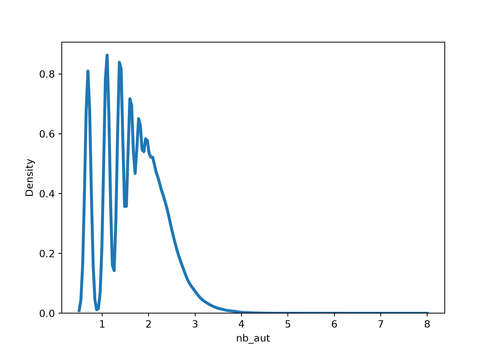

import pandas as pd
import numpy as np
import time
import re
import seaborn as sns
import plotly.express as px
t = time.time()
table_1 = pd.read_csv('data/table_1.csv')
table_2 = pd.read_csv('data/table_2.csv')
cities = pd.read_csv('data/cities_loc.csv')
time.time() - t## 0.3419167995452881Remove articles with no pmid and no DOI, and all articles before 1975
t = time.time()
table_1 = table_1.dropna(subset = ['pmid', 'doi'])
time.time() - t## 0.009940862655639648t = time.time()
table_2 = table_2[table_2.year_pub > 1975].dropna(subset = ['pmid'])
time.time() - t## 0.011487007141113281Merge the two datasets, pmid is unique for each paper
t = time.time()
final_table = table_1.merge(table_2, how = 'inner', on = 'pmid')
time.time() - t## 0.010262012481689453final_table| pmid | doi | title | source | language | pubtype | pubmodel | authors | year_pub | has_data | oa | cited | |
|---|---|---|---|---|---|---|---|---|---|---|---|---|
| 0 | 32837036.0 | 10.1007/s12291-020-00919-0 | The Pathophysiology, Diagnosis and Treatment o... | MED | eng | {"pubType": ["review-article", "Review", "Jour... | "Print-Electronic" | <AUTHOR> Das SK Subir Kumar Das<AFFILIATION>De... | 2020.0 | N | Y | 0 |
| 1 | 32196410.0 | 10.1080/22221751.2020.1746199 | Hypothesis for potential pathogenesis of SARS-... | MED | eng | {"pubType": ["review-article", "Journal Articl... | "Print" | <AUTHOR> Lin L Ling Lin<AFFILIATION>Department... | 2020.0 | N | Y | 61 |
| 2 | 32778421.0 | 10.1016/j.jiph.2020.07.011 | The outbreak of the novel severe acute respira... | MED | eng | {"pubType": ["review-article", "Review", "Jour... | "Print-Electronic" | <AUTHOR> Bchetnia M Mbarka Bchetnia<AFFILIATIO... | 2020.0 | N | Y | 0 |
| 3 | 32730205.0 | 10.1016/j.ijsu.2020.07.032 | A comparative overview of COVID-19, MERS and S... | MED | eng | {"pubType": ["review-article", "Review", "Jour... | "Print-Electronic" | <AUTHOR> Liu J Jie Liu<AFFILIATION>Department ... | 2020.0 | N | Y | 0 |
| 4 | 32394467.0 | 10.1002/jcp.29785 | A global treatments for coronaviruses includin... | MED | eng | {"pubType": ["review-article", "Review", "Jour... | "Print-Electronic" | <AUTHOR> Yousefi B Bahman Yousefi<AFFILIATION>... | 2020.0 | N | Y | 1 |
| ... | ... | ... | ... | ... | ... | ... | ... | ... | ... | ... | ... | ... |
| 108717 | 10808380.0 | 10.1007/s11606-000-0019-1 | Society of General Internal Medicine 23rd annu... | MED | eng | {"pubType": ["Congress", "Overall", "abstract"]} | "Print" | NaN | 2000.0 | N | Y | 0 |
| 108718 | 22696127.0 | 10.1007/s13244-012-0153-4 | ECR 2012 Book of Abstracts - A - Postergraduat... | MED | eng | {"pubType": ["calendar", "Journal Article"]} | "Print" | <AUTHOR><AFFILIATION>None | 2012.0 | N | Y | 2 |
| 108719 | 3368329.0 | 10.1093/nar/16.suppl.r315 | Codon usage tabulated from the GenBank Genetic... | MED | eng | {"pubType": ["Comparative Study", "Research Su... | "Print" | <AUTHOR> Aota S S Aota<AFFILIATION>National In... | 1988.0 | N | N | 90 |
| 108720 | 25412402.0 | 10.1002/14651858.cd000011.pub4 | Interventions for enhancing medication adherence. | MED | eng | {"pubType": ["Meta-Analysis", "Research Suppor... | "Electronic" | <AUTHOR> Nieuwlaat R Robby Nieuwlaat<AFFILIATI... | 2014.0 | N | N | 222 |
| 108721 | 21994484.0 | 10.1007/s13225-011-0088-y | European species of Hypocrea part II: species ... | MED | eng | {"pubType": ["research-article", "Journal Arti... | "Print" | <AUTHOR> Jaklitsch WM Walter M Jaklitsch<AFFIL... | 2011.0 | Y | Y | 44 |
108722 rows × 12 columns
plot distribution for the log(number of authors +1)
sns.distplot(np.log(final_table.nb_aut +1), hist = False, kde = True,
kde_kws = {'linewidth': 3})
How many papers contains ‘deep learning’ or ‘machine learning’ and ‘neural network’ (also with a ‘s’ for neural networks) in their title ? Create a binary variable to save this information. What is the mean of authors for ML papers and non-ML papers ? Transform has_data and oa into binary variable also, what is the share of ML paper that are oa ?
t = time.time()
final_table['title'] = final_table.title.str.lower()
final_table = final_table.assign(
ML = np.where(final_table.title.str.contains('deep learning|machine learning|neural networks?'),1,0),
has_data = np.where(final_table.has_data == 'Y',1,0),
oa = np.where(final_table.oa == 'Y',1,0))
time.time() - t## 0.09523391723632812final_table| pmid | doi | title | source | language | pubtype | pubmodel | authors | year_pub | has_data | oa | cited | nb_aut | ML | |
|---|---|---|---|---|---|---|---|---|---|---|---|---|---|---|
| 0 | 32837036.0 | 10.1007/s12291-020-00919-0 | the pathophysiology, diagnosis and treatment o... | MED | eng | {"pubType": ["review-article", "Review", "Jour... | "Print-Electronic" | <AUTHOR> Das SK Subir Kumar Das<AFFILIATION>De... | 2020.0 | 0 | 1 | 0 | 1 | 0 |
| 1 | 32196410.0 | 10.1080/22221751.2020.1746199 | hypothesis for potential pathogenesis of sars-... | MED | eng | {"pubType": ["review-article", "Journal Articl... | "Print" | <AUTHOR> Lin L Ling Lin<AFFILIATION>Department... | 2020.0 | 0 | 1 | 61 | 4 | 0 |
| 2 | 32778421.0 | 10.1016/j.jiph.2020.07.011 | the outbreak of the novel severe acute respira... | MED | eng | {"pubType": ["review-article", "Review", "Jour... | "Print-Electronic" | <AUTHOR> Bchetnia M Mbarka Bchetnia<AFFILIATIO... | 2020.0 | 0 | 1 | 0 | 4 | 0 |
| 3 | 32730205.0 | 10.1016/j.ijsu.2020.07.032 | a comparative overview of covid-19, mers and s... | MED | eng | {"pubType": ["review-article", "Review", "Jour... | "Print-Electronic" | <AUTHOR> Liu J Jie Liu<AFFILIATION>Department ... | 2020.0 | 0 | 1 | 0 | 7 | 0 |
| 4 | 32394467.0 | 10.1002/jcp.29785 | a global treatments for coronaviruses includin... | MED | eng | {"pubType": ["review-article", "Review", "Jour... | "Print-Electronic" | <AUTHOR> Yousefi B Bahman Yousefi<AFFILIATION>... | 2020.0 | 0 | 1 | 1 | 6 | 0 |
| ... | ... | ... | ... | ... | ... | ... | ... | ... | ... | ... | ... | ... | ... | ... |
| 108712 | 7704896.0 | 10.1128/cmr.8.1.87-112.1995 | feline immunodeficiency virus: an interesting ... | MED | eng | {"pubType": ["Research Support, Non-U.S. Gov't... | "Print" | <AUTHOR> Bendinelli M M Bendinelli<AFFILIATION... | 1995.0 | 0 | 0 | 208 | 9 | 0 |
| 108718 | 22696127.0 | 10.1007/s13244-012-0153-4 | ecr 2012 book of abstracts - a - postergraduat... | MED | eng | {"pubType": ["calendar", "Journal Article"]} | "Print" | <AUTHOR><AFFILIATION>None | 2012.0 | 0 | 1 | 2 | 1 | 0 |
| 108719 | 3368329.0 | 10.1093/nar/16.suppl.r315 | codon usage tabulated from the genbank genetic... | MED | eng | {"pubType": ["Comparative Study", "Research Su... | "Print" | <AUTHOR> Aota S S Aota<AFFILIATION>National In... | 1988.0 | 0 | 0 | 90 | 5 | 0 |
| 108720 | 25412402.0 | 10.1002/14651858.cd000011.pub4 | interventions for enhancing medication adherence. | MED | eng | {"pubType": ["Meta-Analysis", "Research Suppor... | "Electronic" | <AUTHOR> Nieuwlaat R Robby Nieuwlaat<AFFILIATI... | 2014.0 | 0 | 0 | 222 | 16 | 0 |
| 108721 | 21994484.0 | 10.1007/s13225-011-0088-y | european species of hypocrea part ii: species ... | MED | eng | {"pubType": ["research-article", "Journal Arti... | "Print" | <AUTHOR> Jaklitsch WM Walter M Jaklitsch<AFFIL... | 2011.0 | 1 | 1 | 44 | 1 | 0 |
107104 rows × 14 columns
np.sum(final_table.ML)## np.int64(222)np.sum(final_table.oa)## np.int64(77847)np.sum(final_table.has_data)## np.int64(23980)final_table.groupby('ML').agg({'nb_aut':np.mean,
'oa':np.mean})| nb_aut | oa | |
|---|---|---|
| ML | ||
| 0 | 5.772328 | 0.726680 |
| 1 | 6.058559 | 0.801802 |
Clean up pub_type, for simplicity just get the first type
t = time.time()
final_table['pub_type'] = final_table.pubtype.map(lambda pubtype: re.findall('\[\"(.*?)\"',pubtype)[0])
time.time() - t## 0.033676862716674805final_table[['pubtype','pub_type']]| pubtype | pub_type | |
|---|---|---|
| 0 | {"pubType": ["review-article", "Review", "Jour... | review-article |
| 1 | {"pubType": ["review-article", "Journal Articl... | review-article |
| 2 | {"pubType": ["review-article", "Review", "Jour... | review-article |
| 3 | {"pubType": ["review-article", "Review", "Jour... | review-article |
| 4 | {"pubType": ["review-article", "Review", "Jour... | review-article |
| ... | ... | ... |
| 108712 | {"pubType": ["Research Support, Non-U.S. Gov't... | Research Support, Non-U.S. Gov't |
| 108718 | {"pubType": ["calendar", "Journal Article"]} | calendar |
| 108719 | {"pubType": ["Comparative Study", "Research Su... | Comparative Study |
| 108720 | {"pubType": ["Meta-Analysis", "Research Suppor... | Meta-Analysis |
| 108721 | {"pubType": ["research-article", "Journal Arti... | research-article |
107104 rows × 2 columns
What is the pub type with the highest mean/sd of citation ? (use cited and the cleaned pub_type)
final_table.groupby('pub_type').agg({'cited':np.mean}).sort_values('cited',ascending = False)| cited | |
|---|---|
| pub_type | |
| Consensus Development Conference | 94.128205 |
| Research Support, American Recovery and Reinvestment Act | 64.416667 |
| Research Support, U.S. Gov't, P.H.S. | 53.980543 |
| Research Support, N.I.H., Intramural | 48.481308 |
| Clinical Trial, Phase II | 35.285714 |
| ... | ... |
| Webcast | 0.000000 |
| Addresses | 0.000000 |
| Technical Report | 0.000000 |
| Twin Study | 0.000000 |
| Portrait | 0.000000 |
83 rows × 1 columns
final_table.groupby('pub_type').agg({'cited':lambda x : np.std(x,ddof = 1)}).sort_values('cited',ascending = False)| cited | |
|---|---|
| pub_type | |
| Consensus Development Conference | 392.044048 |
| Research Support, N.I.H., Intramural | 144.450609 |
| Research Support, U.S. Gov't, P.H.S. | 97.102551 |
| editorial | 90.848164 |
| Clinical Conference | 84.303766 |
| ... | ... |
| Equivalence Trial | NaN |
| Personal Narratives | NaN |
| Twin Study | NaN |
| Validation Studies | NaN |
| obituary | NaN |
83 rows × 1 columns
Which are the most representative countres by year ? Store this information in an other tibble by keep only pmid and authors, get the country for each author from the loc_cities.csv. You may want to separate rows for each authors to get all countries involved in the paper,if an authors have multiple affiliations, take the first one.
countries = list(cities.country.str.lower().drop_duplicates())
countries_pd = final_table[['pmid', 'authors']]
print(countries_pd['authors'][0])## <AUTHOR> Das SK Subir Kumar Das<AFFILIATION>Department of Biochemistry, College of Medicine and JNM Hospital, WBUHS, Kalyani, Nadia, West Bengal 741235 India.print(countries_pd['authors'][1])## <AUTHOR> Lin L Ling Lin<AFFILIATION>Department of Infectious Diseases, Peking Union Medical College Hospital, Peking Union Medical College, Chinese Academy of Medical Sciences, Beijing, People's Republic of China.<AUTHOR> Lu L Lianfeng Lu<AFFILIATION>Department of Infectious Diseases, Peking Union Medical College Hospital, Peking Union Medical College, Chinese Academy of Medical Sciences, Beijing, People's Republic of China.<AUTHOR> Cao W Wei Cao<AFFILIATION>Department of Infectious Diseases, Peking Union Medical College Hospital, Peking Union Medical College, Chinese Academy of Medical Sciences, Beijing, People's Republic of China.<AUTHOR> Li T Taisheng Li<AFFILIATION>Department of Infectious Diseases, Peking Union Medical College Hospital, Peking Union Medical College, Chinese Academy of Medical Sciences, Beijing, People's Republic of China. <AFFILIATION>Center for AIDS Research, Chinese Academy of Medical Sciences and Peking Union Medical College, Beijing, People's Republic of China. <AFFILIATION>Clinical Immunology Center, Chinese Academy of Medical Sciences, Beijing, People's Republic of China. <AFFILIATION>Tsinghua-Peking Center for Life Sciences, School of Medicine, Tsinghua University, Beijing, People's Republic of China.t = time.time()
countries_pd = countries_pd.assign(
authors=countries_pd.authors.str.split('<AUTHOR>')).explode('authors')
time.time() - t## 0.14776229858398438countries_pd| pmid | authors | |
|---|---|---|
| 0 | 32837036.0 | |
| 0 | 32837036.0 | Das SK Subir Kumar Das<AFFILIATION>Department... |
| 1 | 32196410.0 | |
| 1 | 32196410.0 | Lin L Ling Lin<AFFILIATION>Department of Infe... |
| 1 | 32196410.0 | Lu L Lianfeng Lu<AFFILIATION>Department of In... |
| ... | ... | ... |
| 108720 | 25412402.0 | Jedraszewski D Dawn Jedraszewski<AFFILIATION>... |
| 108720 | 25412402.0 | Cotoi C Chris Cotoi<AFFILIATION>None |
| 108720 | 25412402.0 | Haynes RB R Brian Haynes<AFFILIATION>None |
| 108721 | 21994484.0 | |
| 108721 | 21994484.0 | Jaklitsch WM Walter M Jaklitsch<AFFILIATION>D... |
725407 rows × 2 columns
t = time.time()
countries_pd = countries_pd[(countries_pd.authors != '')
& (-countries_pd.authors.str.contains('<AFFILIATION>None'))]
time.time() - t## 0.1142120361328125t = time.time()
countries_pd = countries_pd.assign(
authors = countries_pd.authors.map(lambda aff: aff.split('<AFFILIATION>')[1])).drop_duplicates(subset=['pmid', 'authors'])
time.time() - t## 0.20442605018615723countries_pd| pmid | authors | |
|---|---|---|
| 0 | 32837036.0 | Department of Biochemistry, College of Medicin... |
| 1 | 32196410.0 | Department of Infectious Diseases, Peking Unio... |
| 1 | 32196410.0 | Department of Infectious Diseases, Peking Unio... |
| 2 | 32778421.0 | Université du Québec à Chicoutimi (UQAC), Dépa... |
| 2 | 32778421.0 | Centre de recherche, Institut universitaire de... |
| ... | ... | ... |
| 108709 | 18843651.0 | Department of Anesthesiology, Pharmacology and... |
| 108712 | 7704896.0 | Department of Biomedicine, University of Pisa,... |
| 108719 | 3368329.0 | National Institute of Genetics, Mishima, Japan. |
| 108720 | 25412402.0 | Department of Clinical Epidemiology and Biosta... |
| 108721 | 21994484.0 | Department of Systematic and Evolutionary Bota... |
291657 rows × 2 columns
t = time.time()
for abr, name in zip([' USA', ' UK', ' Korea'], ['United States', 'United Kingdom', 'South Korea']):
countries_pd.authors = countries_pd.authors.map(lambda aff: re.sub(abr,name,aff))
countries_pd.authors = countries_pd.authors.str.lower()
time.time() - t## 0.34483909606933594t = time.time()
countries_matched = countries_pd.authors.map(lambda aff: [country for country in countries if country in aff])
countries_pd = countries_pd.assign(country = countries_matched).drop('authors', axis = 1)
countries_pd['country'] = countries_pd.country.map(lambda x: x[0] if x else '')
countries_pd| pmid | country | |
|---|---|---|
| 0 | 32837036.0 | india |
| 1 | 32196410.0 | china |
| 1 | 32196410.0 | china |
| 2 | 32778421.0 | canada |
| 2 | 32778421.0 | canada |
| ... | ... | ... |
| 108709 | 18843651.0 | canada |
| 108712 | 7704896.0 | italy |
| 108719 | 3368329.0 | japan |
| 108720 | 25412402.0 | canada |
| 108721 | 21994484.0 | austria |
291657 rows × 2 columns
time.time() - t## 4.533170223236084t = time.time()
countries_pd = countries_pd[countries_pd.country != ''].drop_duplicates(subset=['pmid', 'country'])
time.time() - t## 0.02268385887145996countries_pd| pmid | country | |
|---|---|---|
| 0 | 32837036.0 | india |
| 1 | 32196410.0 | china |
| 2 | 32778421.0 | canada |
| 3 | 32730205.0 | china |
| 4 | 32394467.0 | iran |
| ... | ... | ... |
| 108709 | 18843651.0 | canada |
| 108712 | 7704896.0 | italy |
| 108719 | 3368329.0 | japan |
| 108720 | 25412402.0 | canada |
| 108721 | 21994484.0 | austria |
111479 rows × 2 columns
t = time.time()
countries_year = countries_pd.merge(final_table[['pmid','year_pub']], how = 'left', on = 'pmid')
time.time() - t## 0.0041201114654541016countries_year| pmid | country | year_pub | |
|---|---|---|---|
| 0 | 32837036.0 | india | 2020.0 |
| 1 | 32196410.0 | china | 2020.0 |
| 2 | 32778421.0 | canada | 2020.0 |
| 3 | 32730205.0 | china | 2020.0 |
| 4 | 32394467.0 | iran | 2020.0 |
| ... | ... | ... | ... |
| 111474 | 18843651.0 | canada | 2008.0 |
| 111475 | 7704896.0 | italy | 1995.0 |
| 111476 | 3368329.0 | japan | 1988.0 |
| 111477 | 25412402.0 | canada | 2014.0 |
| 111478 | 21994484.0 | austria | 2011.0 |
111479 rows × 3 columns
countries_year = countries_year.groupby(['country', 'year_pub']).agg(n = ('pmid', len)).sort_values('n', ascending = False)
countries_year = countries_year.reset_index()
countries_year| country | year_pub | n | |
|---|---|---|---|
| 0 | united states | 2020.0 | 11668 |
| 1 | china | 2020.0 | 7888 |
| 2 | united kingdom | 2020.0 | 6262 |
| 3 | italy | 2020.0 | 5910 |
| 4 | india | 2020.0 | 3297 |
| ... | ... | ... | ... |
| 1904 | mexico | 2003.0 | 1 |
| 1905 | mexico | 2005.0 | 1 |
| 1906 | mexico | 2010.0 | 1 |
| 1907 | micronesia | 2014.0 | 1 |
| 1908 | lebanon | 2014.0 | 1 |
1909 rows × 3 columns
Select the top 25 of countries involved in coronavirus research since 2001, plot the evolution on a bar chart with plot_ly
wide_countries = countries_year.pivot(index="year_pub", columns="country", values="n").reset_index()
wide_countries = wide_countries[wide_countries.year_pub > 2000]
countries_to_plot = list(wide_countries.fillna(0).drop('year_pub',axis = 1).apply(sum).sort_values(ascending=False).head(10).index)
fig = px.bar(wide_countries, x="year_pub", y=countries_to_plot)
fig.update_yaxes(type="log")